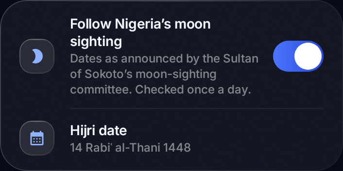

Hijri calendar
The Hijri date,
as announced.
Not a calculation. Dates follow the Sultan of Sokoto's moon-sighting committee, and when a new month is announced, the app updates on its own.

Free for AndroidMorning and evening adhkaar, on time.